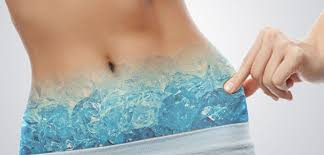

Criolipólise

Criolipólise: antes e depois, cuidados, riscos e contraindicações
A criolipólise é um tipo de tratamento estético que pode ser realizado para eliminar o acúmulo de gordura
localizada em várias partes do corpo, como coxas, abdômen, tórax, quadril e braços, por exemplo.
Esta técnica é baseada na intolerância das células de gordura a baixas temperaturas, rompendo-se quando
estimuladas pelo equipamento. A criolipólise garante a eliminação de cerca de 44% da gordura localizada em
apenas 1 sessão de tratamento.
Na criolipólise é utilizado um equipamento que congela as células de gordura e, por isso, para que seja eficaz
e seguro, o tratamento deve ser realizado por um profissional qualificado, com um aparelho certifica e com a
manutenção em dia. Quando isso não acontece, existe o risco de complicações graves, principalmente o
aparecimento de queimaduras de 2º ou 3º grau.

Como é feito o tratamento
A criolipólise é um procedimento simples, sendo que, para fazer a técnica, o profissional passa um gel protetor
na pele e depois posiciona o equipamento na região a ser tratada.
O aparelho irá sugar e resfriar a área até cerca de -7/ -10ºC por 1 hora, que é o tempo necessário para que
haja congelamento das células de gordura. Após o congelamento, as células de gordura rompem-se e são
o eliminadas naturalmente pelo sistema linfático.
Cuidados após o tratamento
Após a criolipólise é indicado realizar uma sessão de massagem local para uniformizar a área tratada.
Além disso, é recomendado que seja realizada pelo menos 1 sessão de drenagem linfática ou pressoterapia
para facilitar a eliminação de gordura e agilizar os resultados.
Não é necessário associar nenhum outro tipo de procedimento estético ao protocolo da criolipólise
pois não existem provas científicas de que sejam eficazes. Dessa forma, basta realizar a criolipólise
e realizar drenagem linfática regularmente para ter o resultado desejado
Antes e depois da criolipólise
Os resultados da criolipólise começam a surgir em cerca de 15 dias mas são progressivos e vão
acontecendo em cerca de 8 semanas após o tratamento, que é o tempo que o organismo
necessita para eliminar completamente a gordura que foi congelada.
Após este período deve-se voltar à clínica para avaliar a quantidade de gordura
eliminada e então verificar a necessidade de se realizar uma outra sessão.
O intervalo mínimo entre sessões é de 2 meses e cada sessão elimina
aproximadamente 4 cm de gordura localizada.
A criolipólise dói?
A criolipólise pode causar dor no momento em que o aparelho suga a pele, dando a sensação de
um beliscão forte, mas que logo depois passa devido à anestesia causada
pela baixa temperatura do aparelho.
Após o tratamento, a pele normalmente fica vermelha e inchada, por isso, é indicado realizar
uma massagem local para aliviar o desconforto e melhorar a aparência. A região tratada pode
ficar dolorida durante as primeiras horas, mas geralmente não causa grande desconforto.
Possíveis riscos para a saúde
A criolipólise é um procedimento seguro, desde que realizado por um profissional capacitado e que o
aparelho esteja devidamente calibrado e com a temperatura ajustada. Caso essas condições não
sejam respeitadas, há risco de queimaduras de 2º a 3º grau, tanto por causa da desregulação
da temperatura, quanto por causa da manta que é colocada entre a pele e o aparelho,
que deve estar íntegra.
Além disso, para diminuir os riscos, é indicado que o intervalo entre sessões seja de mais ou menos 90 dias,
pois caso contrário pode haver uma resposta inflamatória muito exagerada do organismo.
Apesar de não serem descritos muitos riscos associados à criolipólise, o procedimento não é recomendado
para pessoas que foram diagnosticadas com doenças causadas pelo frio, como crioglobulinemias, que
possuem alergia ao frio, hemoglobinúria paroxística noturna ou que sofrem do fenômeno de
Raynaud, além de também não ser indicado para pessoas com hérnia na região a ser tratada, grávidas ou
que possuem cicatrizes no local.
Quem não pode fazer a criolipólise
O procedimento não é recomendado para pessoas que foram diagnosticadas com doenças causadas
pelo frio, como crioglobulinemias ou alergia ao frio. Também deve ser evitada em
casos de hemoglobinúria paroxística noturna, síndrome de Raynaud, , além de também ser contraindicado
para grávidas e pessoas com hérnia na região a ser tratada ou com cicatrizes.
